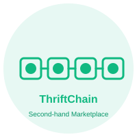

Token Loyalitas $THRIFT
Dapatkan token untuk setiap aktivitas jual beli dan tukarkan dengan penawaran eksklusif atau saldo Rupiah.

ThriftChainLoyalitas fashion bekas di jaringan Solana.
Aplikasi Konsumen | dApp Mobile
ThriftChain mengubah setiap pembelian dan penjualan pakaian bekas menjadi token loyalitas Solana yang bisa ditukar menjadi diskon, cashback SOL, atau saldo Rupiah.
Dompet
Klik “Hubungkan Dompet” untuk memulai dengan Phantom Wallet.
Apa yang Dibangun
ThriftChain dirancang untuk komunitas fashion bekas yang ingin mendapatkan nilai ekonomi nyata dari aktivitas belanja mereka. Semua transaksi dikomputerisasi dalam jaringan Solana, sehingga token $THRIFT menjadi hadiah cepat, murah, dan dapat ditukar.
Fitur Utama
Dapatkan token untuk setiap aktivitas jual beli dan tukarkan dengan penawaran eksklusif atau saldo Rupiah.
Login mudah lewat Email, Google, atau TikTok ditambah dompet otomatis untuk adopsi massal.
AI Python memberikan rekomendasi fashion bekas yang relevan dan sesuai preferensi pengguna.
Menginspirasi gaya hidup circular economy dan mengurangi jejak industri mode.
Teknologi
Kontrak pintar cepat dan biaya rendah memakai standar SPL untuk token loyalitas.
Login sosial dengan Google, TikTok, atau email, plus dompet tersemat untuk pengguna Web2.
Scikit-learn, Pandas, dan Hugging Face untuk rekomendasi produk yang dipersonalisasi.
Mengapa Sekarang
ThriftChain menjawab kebutuhan 64% Gen Z Indonesia yang aktif berbelanja bekas. Dengan pasar global yang diproyeksikan tumbuh sangat cepat, kami menghadirkan solusi loyalitas yang memberikan nilai finansial langsung dan mendukung sustainability.
64%
Gen Z Indonesia beli barang bekas
$249B → $393B
Proyeksi pasar resale global 2026–2030
10%
Emisi global mode yang bisa dikurangi
Siap bergabung?
Daftar sekarang untuk menjadi bagian dari aplikasi loyalitas yang memadukan blockchain Solana, AI rekomendasi, dan cashback nyata dalam Rupiah.